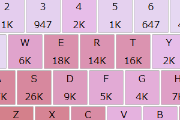
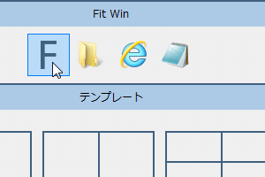
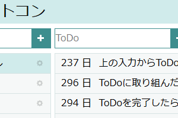

GithubQiitaTwitterBlogEmailバグの報告・要望
とじる
2015/03/14 Fit Win を更新
2014/10/19 Fit Win を更新
2014/08/31 kaisekey を公開
2014/08/** ToCon の公開を停止
2014/07/12 てくてくぺたぺたを公開
2014/07/12 Fit Win を更新
2014/07/02 Fit Win を更新
2014/06/02 Fit Win を公開
2013/08/18 ToCon を公開

kaisekey
キーバインドをカスタマイズする過程でつくったキーロガーと カスタマイズの解説 です。
2014/08/31

Fit Win v1.2
複数のウィンドウを並べたり、移動・サイズ変更できる Windows 用フリーソフトです。
2014/06/02 - 2015/03/14

ToCon
ToDo を管理する Web サービスです。公開を停止しました。
2013/08/18 - 2014/08/**